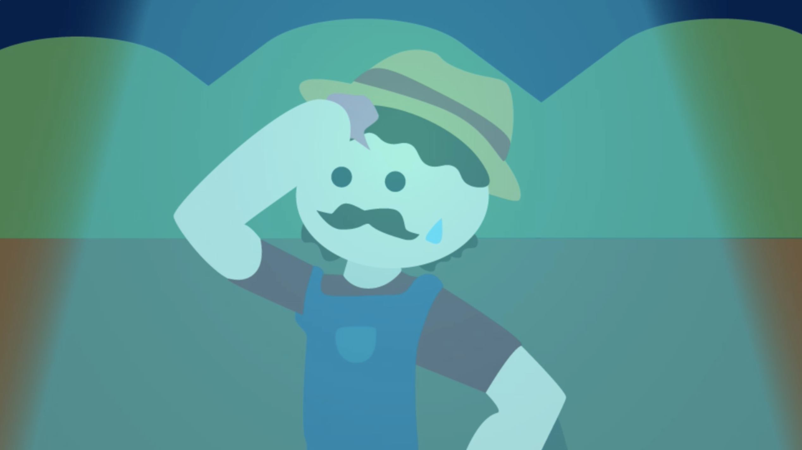

Network IDs are used to identify what station the audience is watching. They often are a visual representation of what the channel is all about. As SYFY is a channel that has programs based around the supernatural and science fiction, I wanted to create an animation that ties back to this. Additionally, this project served as an opportunity to write original music for the piece.
By using the recognizable trope of a farmer being abducted by aliens, I created storyboards laying out the plan for the animation. This really assisted me in decicing the timing of the animation. Making a comprehesive scene in a shorter amount of time was a challenge, but I feel that this was accomplished through the finished product.
